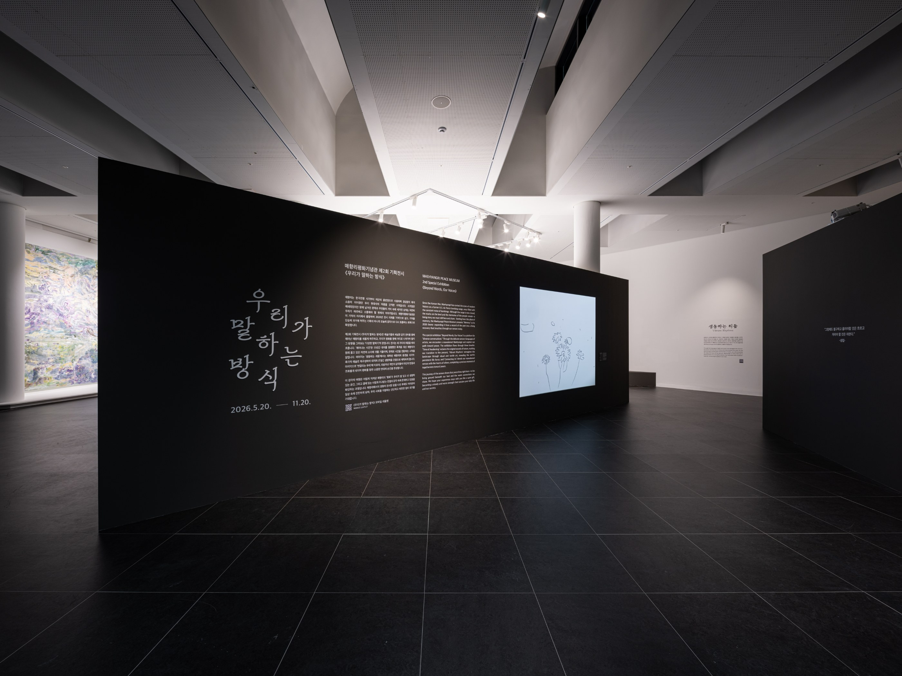
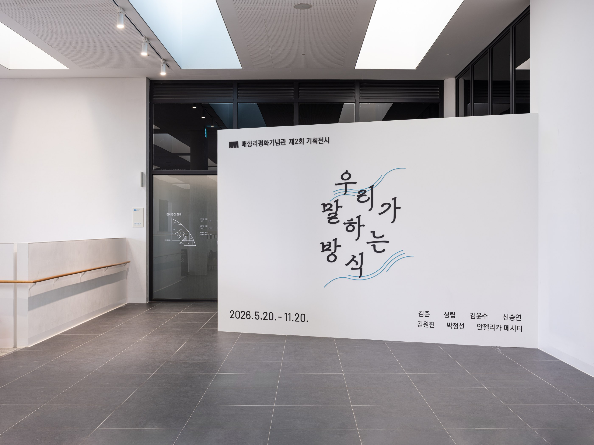
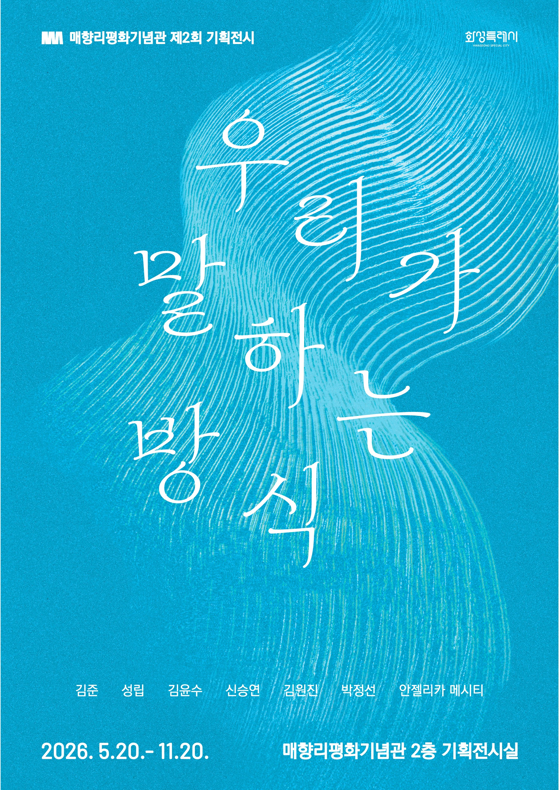
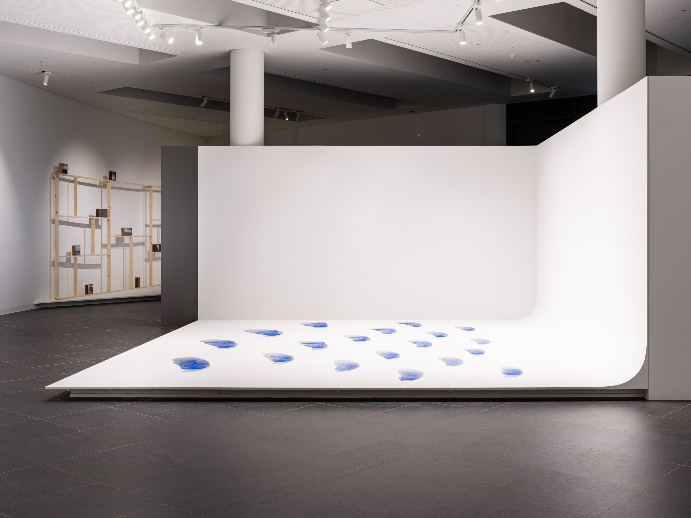

Exhibition
Beyond words, Our voices
2026
매향리 평화기념관 특별전 '우리가 말하는 방식'의 전시 디자인. 상처의 시간을 지나온 장소가 말하는 방식에 관한 이야기.
Exhibition design for ‘Beyond words, Our voices’, a special exhibition at the Maehyang-ri Peace Memorial Hall. A story about how a place that has lived through a time of wounds speaks.
- Client
- 매향리 평화기념관 / Maehyang-ri Peace Memorial Hall
- Role
- Project Manager



